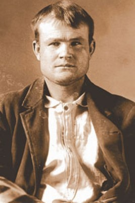

Treasure Map Found At Dig Site
Preston, Idaho is known for two things; Napoleon Dynamite, and potatoes. However, after the discovery of a treasure map was found by a construction worker preparing the ground for the new Preston Aquatic Center three weeks ago on a Tuesday afternoon, perhaps Preston will be known for three things. Jim Brigham was doing some digging when he noticed an old bottle that looked like it had something inside. Upon closer inspection, he realized he had found a map. Lucky for him his wife, Barbra Brigham, has an interest in cartography and was able to identify that the map was of the surrounding area and seemed to lead to a treasure. She says,
“Just below the map is an inscription that, after carefully examining, seems to say B. Cassidy Insurance Policy. We believe that this could be a map that leads to some treasure that Cassidy may have stashed away for a rainy day.”
After Mrs. Brigham realized what her husband had found she took the bottle and map to Utah State to be examined by some visiting professors. Together they were able to deduce that the map and bottle were indeed real. The finding of the map has created a buzz throughout the town that has everyone excited. Mr. Brigham says,
“My kids and their friends have been talking about finding the treasure since I brought it home. It’s caused everyone to get excited about the mystery of the map and if the treasure is still hidden.”
In four weeks the Map is to be put on display for the town to come and see for themselves. Who knows, perhaps some will even seek the adventure that comes with finding buried treasure.